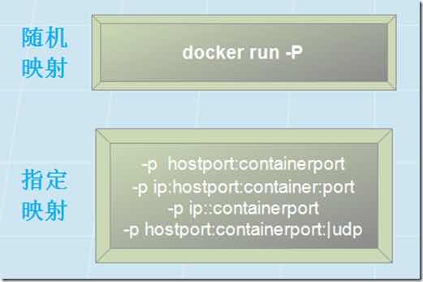

容器操作命令
容器控制
命令速查
| 命令 | 命令描述 | ||
|---|---|---|---|
| create | 根据镜像生成一个新的容器 | ||
| start | 启动一个新的容器 | ||
| run | 创建、启动容器并执行相应的命令 | ||
| rename | 重命名容器名 | ||
| ps | 查看运行中的容器 | ||
| top | 显示容器的运行进程 | ||
| stop | 关闭容器 | ||
| kill | 强制关闭容器 | ||
| restart | 重启容器 | ||
| pause | 暂停容器 | ||
| unpause | 恢复暂停的容器 | ||
| exec | 在已运行的容器中执行命令 | ||
| attach | 进入运行中的容器, 显示该容器的控 | 制台界面。 | |
| logs | 打印容器的控制台输出内容 | ||
| port | 容器端口映射列表 | ||
| rm | 删除已停止的容器 | ||
| diff | 展示容器相对于构建它的镜像内容所 | 做的改变 | |
| export | 导出容器到本地快照文件 | ||
| cp | 在容器和宿主机之间复制文件 | ||
| wait | 阻塞当前命令直到对应的容器被关闭, 容器关闭后打印结束代码 |
最常用命令
docker run [OPTIONS] IMAGE [COMMAND] [ARG...]
-d: 后台运行容器，并返回容器ID-i：以交互模式运行容器，通常与 -t 同时使用-t：为容器重新分配一个伪输入终端，通常与 -i 同时使用-v：绑定挂载目录--name="mycontainer": 为容器指定一个名称--net="bridge": 指定容器的网络连接类型，支持bridge、host、none-p/-P: 端口映射

启动/重启容器
docker start/restart CONTAINER
停止/强停容器
docker stop/kill CONTAINER
删除容器
docker rm [OPTIONS] CONTAINER [CONTAINER...]
重命名容器
docker rename CONTAINER CONTAINER_NEW
输出容器运行TTY日志 attach命令
将本地标准 input，output 和 error 流附加到正在运行的容器。
https://docs.docker.com/engine/reference/commandline/attach/
docker attach CONTAINER
ps：attach命令主要显示 ENTRYPOINT/CMD 进程的输出。看起来好像容器被挂起，该进程实际上根本就没有与终端进行交互。
执行容器命令
docker exec CONTAINER COMMAND
进入容器
当然 sh 也可以替换成 bash
docker exec -it CONTAINER sh
查看容器日志
查看全部日志
docker logs [OPTIONS] CONTAINER
实时打印容器日志，类似于 tailf
docker logs -f [OPTIONS] CONTAINER
查看容器列表
docker ps [OPTIONS]
port命令
打印容器的端口映射 https://docs.docker.com/engine/reference/commandline/port/
docker port CONTAINER [PRIVATE_PORT[/PROTO]]
$ docker ps
CONTAINER ID IMAGE COMMAND CREATED STATUS PORTS NAMES
b650456536c7 busybox:latest top 54 minutes ago Up 54 minutes 0.0.0.0:1234->9876/tcp, 0.0.0.0:4321->7890/tcp test
$ docker port test
7890/tcp -> 0.0.0.0:4321
9876/tcp -> 0.0.0.0:1234
$ docker port test 7890/tcp
0.0.0.0:4321
$ docker port test 7890/udp
2014/06/24 11:53:36 Error: No public port '7890/udp' published for test
$ docker port test 7890
0.0.0.0:4321
公众号
如果你想订阅我的文章，可以微信扫码关注我的公众号【机智的程序员小熊】，我是一个爱思考的程序员，专注于开发、运维、云技术、计算、网络、云存储、数据库、linux等编程知识